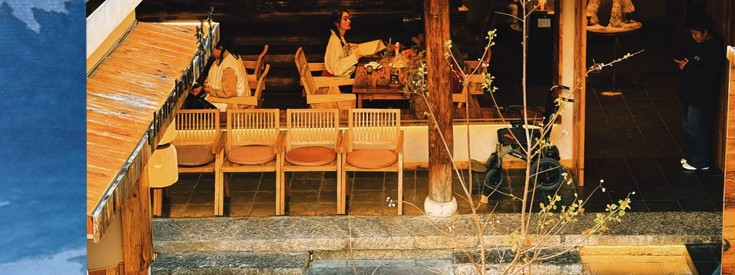
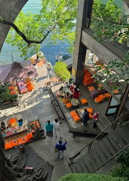
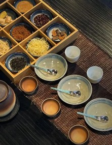

大理
苍洱之间，慢慢逛
六处景点，右下角加号收进行程
不只是景点
洱海
第一次来，用半天把这片湖看懂，不必骑完全圈。
可以这样逛
- 1先到岸边看水色才村或龙龛都行，到了先站 10 分钟，别急着骑行。
- 2沿生态廊道走一段走 3–4 公里足够。全湖一圈要一天，第一次来不划算。
- 3下午回古城吃饭西边看山、东边看湖，选一边即可。
现场


接下来去
喜洲古镇
看白族院子和扎染，中午可以坐下来喝杯三道茶。
可以这样逛
- 1严家大院看民居三坊一照壁进院子里看，比在街上拍墙有用。
- 2转进作坊看扎染能看见蓝白怎么一层层浸出来，不必报整日体验。
- 3田园小火车绕一圈坐 20 分钟看田和村子，当作收尾。
现场


接下来去
双廊
村子贴着湖岸长，适合慢慢拍，车程要单独留出来。
可以这样逛
- 1南门码头下看湖先确认水色和风，再决定往北走多远。
- 2沿岸走到玉几岛一带白墙、栈道、远山叠在一条线上，是主要拍照段。
- 3拱桥打卡后返程不必住下来。当天来回，和洱海不要排在同一上午。
现场
接下来去

苍山
雪线落在湖对面。第一次来，海边看山通常比上山更值。
可以这样逛
- 1先在洱海西岸看山确认当天有没有云。云封顶时不必硬上。
- 2再决定要不要坐索道感通索道半日足够。徒步洗马潭要一整天。
- 3下午下山回城别和双廊排同一天，车程会把行程吃掉。
接下来去
崇圣寺三塔
大理的天际线。不用走完全寺，把三座塔的比例看清即可。
可以这样逛
- 1先在门外看全景三塔和苍山叠在一起，是最清楚的构图。
- 2进寺走到主塔前不用逐殿转。主塔前站 15 分钟够用。
- 3出寺回古城和喜洲不要排同一上午，会赶。
现场

接下来去
湖上拱桥
双廊岸边的打卡点。拍完对称倒影就可以走，不必单独排半天。
可以这样逛
- 1桥头看倒影无风时最清楚。有风就换角度，不必等。
- 2走上桥面转身拍村子白墙和湖在同一条线上。
- 3接着走双廊岸线这是双廊的一站，不是独立景点。
接下来去
点加号收进体验单，再按地点排
大理扎染以周城最完整。白不是画剩的空，是线缝死、靛泥浸不进去的地方；蓝也不是涂上去，是板蓝根缸里一遍遍浸、提出来氧化变深。
看布先找白，再数蓝有几层。

一块布认这三处
缝、绑、结挡住的位置。拆线后才露出来，不是颜料留白。
浅蓝到深蓝是浸的次数。提出来见空气，才会慢慢变蓝。
蝴蝶、几何、山水纹，都从折叠来。先看折痕，再看图案。
一小时可以做什么
- 1只做方巾或手帕不要一上来做桌布。小块才能在一小时里浸完、拆线。
- 2跟师傅走一遍针法常见是缝、绑两种。缝住的地方浸不进色，这就是白。
- 3浸靛、提出、见空气出缸时往往还是绿黄，挂着氧化才转蓝。湿着带走也行，回家阴干。
去周城还是喜洲
怎么带走
- 1只叠方巾或手帕对光能看见针眼，才是手作。湿着阴干，不要暴晒。
看完可以继续
瓦猫蹲在白族房子的正脊上，开口朝外。不是院子里的摆件，是屋脊上的守护。没有屋脊实拍时，用货架小偶对图，不拿别的兽形来冒充。
先抬头看脊，再进店里认小偶。
路过认这三处
在屋脊正中，不在门墩、不在院子。找不到脊，就还没看见它。
嘴是张开的。民间说法是吞灾、镇火，不要把它当成装饰猫。
店里的是缩小的手作。买之前先对照屋脊上的那一只。
怎么看
- 1站在巷口抬头喜洲老房子的正脊最容易碰上。不要爬屋顶、不要伸手摸。
- 2看完再进店小偶是记忆，不是替代。先有屋顶上的那一只，再决定带不带。
常见格局是三坊一照壁：三面住房，正对大门一面照壁。照壁把光弹回院子，也把「家」的边界立住。喜洲的院子比古城完整，值得停下来进门看。
先看照壁，再走三坊。

进院认这三处
大门对面那面墙。看它如何挡视线、把光送回天井。
三面住房围成「坊」。走一圈，比只在门口拍照有用。
门头、梁枋上的彩绘。近看笔触，远看和白墙的对比。
可以这样走
- 1从大门对到照壁先站在门槛上看整面壁，不要一进门就左右拍。
- 2顺三坊走一圈正房、厢房的高低和开间，比装饰更说明格局。
- 3中午可坐下来选有树荫、能看见水的台阶。院子里喝茶或看扎染，不必另开一天。

白族待客是三杯，不是菜单上的套餐名。第一道烤茶偏苦，第二道加糖或乳扇变甜，第三道姜、桂一类走回味。三杯都坐下喝完，才算遇见。
一苦二甜三回味，顺序不要打乱。

三杯分别是什么
烤茶。焦香、入口涩。第一杯小口，不要兑糖。
红糖或乳扇一类。甜是压过苦，不是另外一道点心。
姜、桂、花椒一类走喉。喝完停 10 秒，回味才出来。
怎么坐
- 1按顺序接杯不要三杯同时要。每道之间留一点空，才喝得出差别。
- 2别当成表演有人会讲解，也可以不听。关键是把三杯喝完。
- 3和民居同一条线喜洲看完院子再坐，比单独跑一趟茶馆顺。带回去要三份分开，混成一包茶泡不出三道。
先看比例，再问名字。飞檐、屋脊、背后的苍山叠成一层，站远比贴着牌坊拍更清楚。崇圣寺三塔是把这条天际线钉住的那三座。
退一步，让山进画面。
抬眼认这三层
飞檐的起翘和出挑。近看构件，远看它如何压住墙面。
正脊是一条线。有瓦猫就在这条线上，和楼阁是同一套屋顶语言。
苍山在北。楼阁把山留在身后，才有「叠一层」的感觉。
怎么看
- 1先退到能看见整座贴着墙只看彩绘。退到巷口或空地，檐和山才会同时进画面。
- 2要看塔，去崇圣寺三座塔把天际线钉住。不必走完全寺，站在远处把比例看清即可。

大理一带多在农历六月下旬。夜里围着火堆走，不是景区固定场次。赶不上，不要把它写成必须打卡；赶上了，停下来看完一圈再走。
遇到就停，没遇到就看别的。
夜场认这三处
主火堆在空地中央。先站在外圈，看人怎么走，再决定靠不靠近。
人是围着走，不是排队打卡。插进圈里拍照会挡路。
亮处只有火。路不熟就站在灯亮的一侧，看完再回住的地方。
赶上了怎么走
- 1先问当天有没有客栈或村里会贴。没有就改看民居、扎染，不要空等。
- 2站外圈看完一轮火把、人、烟是一起的。看懂方向再走近。
- 3别把它当表演没有固定谢幕。觉得够了就离开，把路留给还在转的人。
云上大理城
从空中先看见苍洱。看完再决定去岸上还是进古镇。
特展只做沉浸，不塞攻略。看完从这里回到景点或文化，继续逛。
记录你想去的大理
还没有想去的地方
去首页逛逛，看中了再收进来大理
把分散的文旅信息，收成可逛的一条路。瓦猫只出现在启动、空状态和这里。
课程项目 · 界面设计练习
TDesign 主题化 · 非官方导览
加载失败
过一会再试试